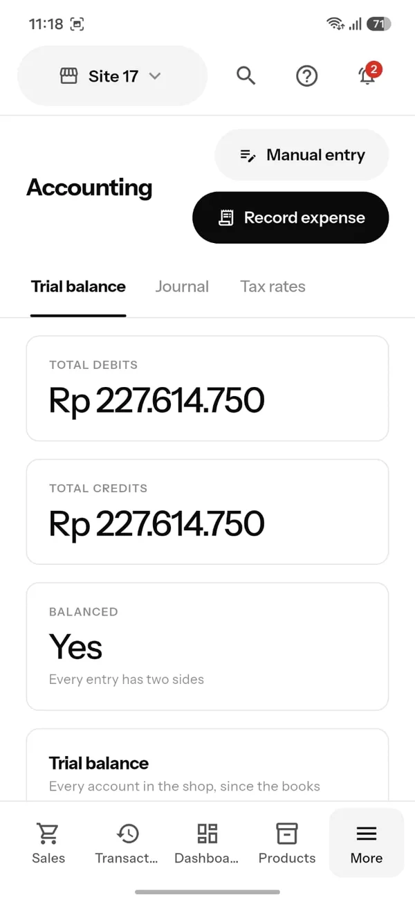
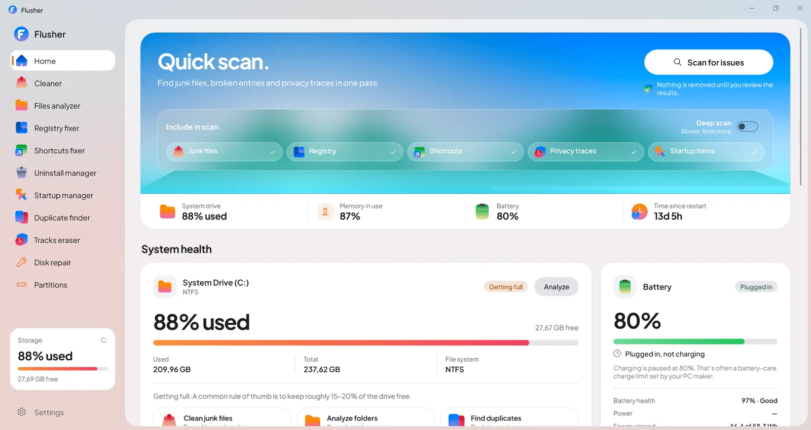
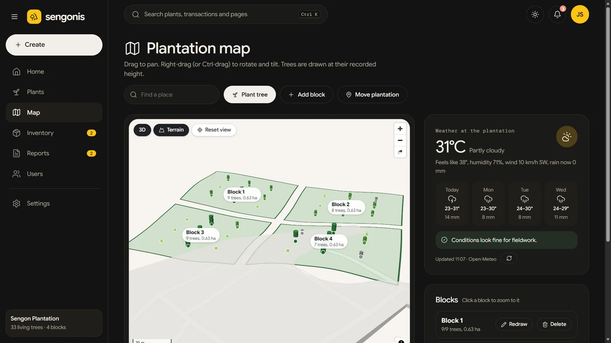
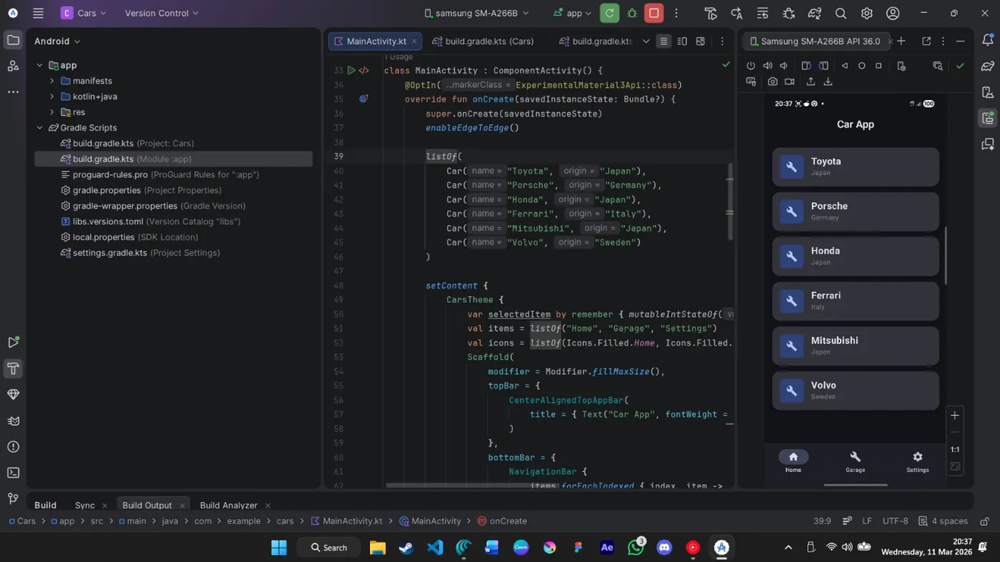

I write C# for Windows, Python for real-time graphics and Flutter for mobile. Everything is built by hand, then tested the way a CTF player would break it.
Project GAIA
A procedural city renderer that streams OpenStreetMap terrain around the camera.
Python · PyOpenGL · In progress
Architecture
The world is divided into chunks that are generated and released as the camera moves, so nothing loads a full map up front. Fly, drive and walk modes share one world state.
Key details
- Atmospheric scattering, day/night cycle and weather
- Simulated traffic
- Minimap, directions and an in-world clock
Built with
Windows · Python · PyOpenGL · OpenStreetMap
Prodex POS
One Flutter codebase for a register on desktop, tablet and phone.
Flutter · Dart

Architecture & layout
A single Flutter codebase adapts from a desktop register to a phone. On the phone, a five-tab bar covers Sales, Transactions, Dashboard, Products and More, and a site switcher scopes every screen to one shop.
Register & history
- Colour-coded item grid per category, search, shortcuts, a low-stock view and an editable layout
- Sales and returns, filtered by today, 7 days or all, with a net total and export
Accounting
- Double-entry: trial balance and journal
- Tax rates, manual entries and expense recording



Flusher
A native Windows 11 system cleaner and disk analyzer.
C# · WinUI 3

Quick scan
One pass over junk files, registry entries, shortcuts, privacy traces and startup items, with system health cards for the drive, memory and battery.
Tools
- Cleaner, Files analyzer, Duplicate finder
- Registry fixer, Shortcuts fixer, Tracks eraser
- Uninstall manager, Startup manager
- Disk repair and Partitions
Built with
Windows 11 · C# · WinUI 3
Veggify
A crop planner that turns elevation and climate data into planting advice.
C# · WinUI 3 · .NET 8

Architecture & rendering
The analysed area is a block of 16×16-cell chunks on an absolute lat/lon lattice, with 100 to 400 m cells and up to nine chunks per side. Chunks load in parallel and are cached in memory and on disk, so panning only downloads what is missing. A z-buffered software rasteriser draws the 3D surface and keeps 20,000+ cells interactive.
Key details
- Marching-squares contour lines per chunk with global levels, so lines stay continuous across chunk borders
- Weather page: 48 h charts, 7-day forecast, soil by depth, water balance, growing degree-days and spray windows
Crops & tests
- Suitability grades with rule-score bars and a profit-per-year estimate
- Headless tests for chunk stitching, caching, contours, Open-Meteo parsing and the renderer
Sengonis
Tree records, finances and mortality reports for a sengon plantation, with loss prediction.
Web · Random Forest · Team project

The problem
A sengon smallholding in Gebang, Jember tracked trees, seedling purchases, timber sales and tree deaths on paper receipts. About 10% of notes were lost and losses of up to 20% went unexplained. The target: cut loss risk to 15% and lost records to zero.
Two roles, one workflow
Owners manage users, validate transactions and verify reports. Field officers register trees, log daily transactions as drafts and file mortality and financial reports. Every change leaves an audit trail.
Random Forest prediction
Loss is forecast with Random Forest Regression over tree records, finance and mortality reports. With too little history the dashboard says so instead of showing a number.
Key details
- 3D plantation map with trees at their recorded height
- Dashboard per period: population, cash flow, mortality trend
- Weather panel with a fieldwork advisory
Analysis & design
A software analysis and design course project at Universitas Jember: context diagram, DFD levels 0 to 2, a seven-table ERD and use cases UC01 to UC21.
More
 UNEJ MapsPython · JavaScript · Figma
UNEJ MapsPython · JavaScript · FigmaPick two places on campus and see how Dijkstra, BFS and DFS disagree about the way there.

Kotlin · Jetpack ComposeCar App
An Android app in Jetpack Compose with a bottom navigation bar and a car list.
 Kali · Wireshark · Burp Suite
Kali · Wireshark · Burp SuiteCTF & forensics
Forensics, cryptography and reverse engineering, one challenge at a time: PCAP and memory dumps, binaries, web source review.
- GX6605S firmware reverse engineeringGhidra · Binary analysis
Dumping the firmware, recovering symbols in Ghidra and cross-flashing on Goldsat Orchid hardware.
- Webcam hand-tracking mousePython · MediaPipe · OpenCV
Maps hand landmarks to the cursor in real time, with gesture thresholds for clicking and scrolling.
- Tugaskan & Cepatkan JadwalkanJavaScript · HTML/CSS
Zero-dependency task and schedule planners.
- C++ search & sorting benchmarkC++
A CLI that profiles runtime across Linear Search, Quick Sort and Binary Search datasets.
- Procedural 2D vector & UI systemsPyCairo · Python
Programmatic vector illustrations, custom icon sets and desktop interface prototypes.
- Academic · 2025–2026
Linear algebra & discrete math
Geometric transformations in 2D/3D computer graphics, and relational database modeling on Northwind Traders.
Based in Jember, Indonesia.
- Studying
- B.S. InformaticsUniversitas Jember, 2025 – nowAlgorithms · Linear Algebra · Software Analysis & Design · Operating Systems
- Community
- Google Student Ambassador2026 Batch 2Logicware & Open Source · CTF competitions
- Stack
- C++ · C# · WinUI 3 · .NET 8 · EF CorePython · PyOpenGL · Flutter · Kotlin · Jetpack ComposeKali · Ghidra · Wireshark · Burp Suite · Git